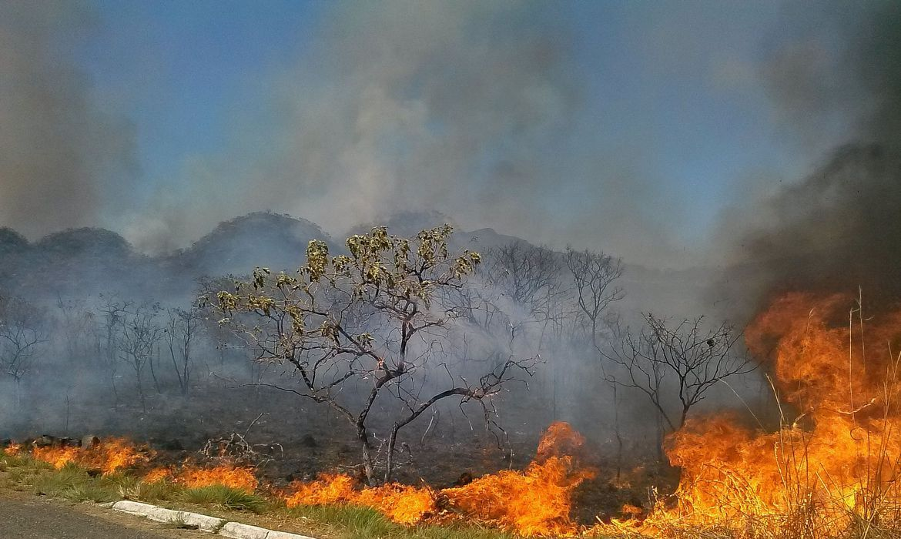
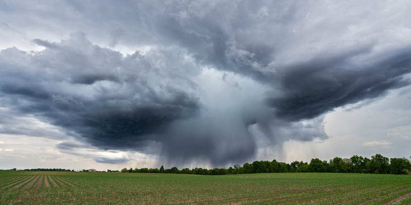

As queimadas no Pantanal são causadas por uma combinação de fatores naturais e humanos. A seguir, destacamos as principais causas:
1. Uso do Fogo para Agricultura e Pecuária
O fogo é utilizado para limpar áreas de pastagem, mas quando mal administrado, escapa e destrói grandes áreas de vegetação nativa.

2. Desmatamento Ilegal
O desmatamento ilegal para expansão agrícola também contribui significativamente para o aumento das queimadas no Pantanal.

3. Mudanças Climáticas
A alteração do clima, com aumento de temperaturas e períodos de seca, torna o Pantanal ainda mais suscetível às queimadas.

O combate às queimadas exige a união de políticas públicas e práticas sustentáveis por parte da população.